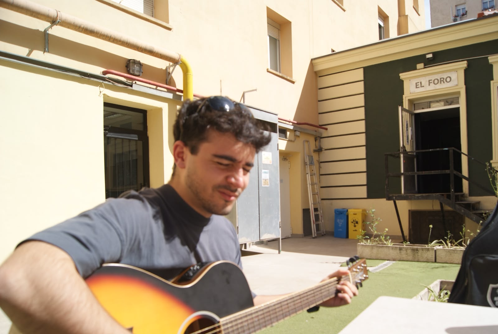
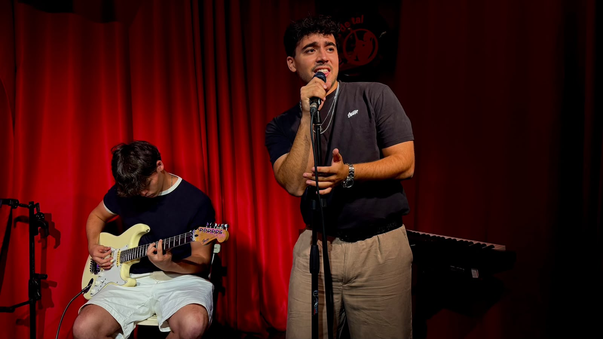

Antes de ser canción,
fue vida.
Una historia de kilómetros, personas, cambios de planes y momentos que se quedan a vivir en una melodía.

Tu fotografía aquíassets/img/historia.jpg
No es solo
música.
Hay canciones que empiezan mucho antes de coger una guitarra o escribir la primera frase. Empiezan cuando algo cambia por dentro y necesitas encontrarle un sitio a todo eso.
Mi música se mueve entre el pop alternativo, la emoción del indie y la energía del rock. Me gusta contar historias reales, sin fingir que siempre tienen un final perfecto.
A veces hay que irse lejos para entender qué quieres llevarte de vuelta.
Madrid, Chicago, las personas que se quedan cerca incluso cuando están lejos. Entre despedidas y reencuentros, fui encontrando una forma propia de convertir recuerdos en canciones.
Lo bonito, lo incómodo, lo que duele y lo que vuelve. Todo cabe aquí.

Foto de ensayo o directoassets/img/escenario.jpg